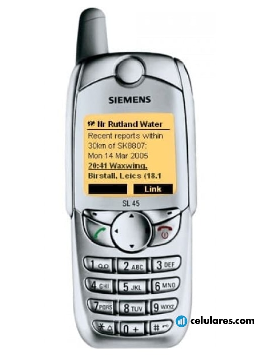

Siemens SL45, música en tus bolsillos
Comenzamos con una reliquia de los celulares retro. Un modelo que en su momento causó un gran furor debido a una característica que muchos esperaban tener en su propio móvil: audios en MP3.El Siemens SL45 fue una revelación al incorporar una modalidad para escuchar música, con una memoria de 34MB que podía expandirse para seguir disfrutando de tus audios favoritos.
Un dato interesante sobre este celular es que, una vez que lo adquirías, la compañía incluía unos audífonos gratis dentro del paquete, que solo eran compatibles con este modelo.